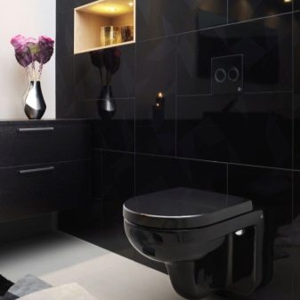
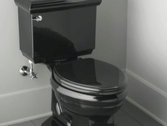
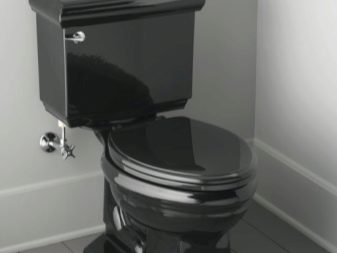

Geriausių tualeto dubenių įvertinimas pagal vartotojų atsiliepimus
2020.10.29 08:29

Toggle navigation Sportas Grožis Ir Sveikata Sofos Kitas Sveikatos Lithuanian Croatian Czech Danish Dutch English Estonian Finnish French German Hebrew Hungarian Italian Latvian Lithuanian Norwegian Polish Portuguese Slovak Slovenian Spanish Swedish Turkish Serviceyards.com Remontas Ir Nekilnojamasis Turtas Geriausių tualeto dubenių įvertinimas pagal vartotojų atsiliepimus
Latest
Geriausių kaukių suvirintojų įvertinimas naudotojų atsiliepimuose May 4, 2018 Geriausių metalinių įėjimo durų gamintojų įvertinimas May 2, 2018 Geriausios interjero durys iš pirkėjų apžvalgų May 1, 2018Geriausių tualeto dubenių įvertinimas pagal vartotojų atsiliepimus
Remontas Ir Nekilnojamasis Turtas May 3, 2018be tualeto dabar negali padaryti jokios vieną butą.Iš pradžių gali atrodyti, kad šis objektas gali tarnauti amžinai. Bet iš tikrųjų, laikui bėgant tualetas nebeatitinka estetinius reikalavimus. Tada buto savininkas turi galvoti apie naujo produkto pirkimą.Ir tik tuo momentu žmogus supranta, kad jų pasirinkimas yra neįtikėtinai plati.Šiame straipsnyje mes aptarsime geriausius tualetai laisvų Rusijos mažmeninės ir rinkti tik teigiamą atsiliepimą.
Turinys:
tualetiniai kokios markės pasirinkti geriausią įvertinimas tualetai Geriausi naudoti kompaktiški tualetai Top sustabdytas tualetai Kas WC WC pirktikokia įmonė pasirinkti
Cersanit
Lenkijos gamintojo Cersanit santechnika buvo įkurta 1998 metais. Per tokį trumpą laiką jis sugebėjo pasiekti pasaulinį lygį.Aš prisidėjo prie šio ne tiek daug tualetų problemą, Kaip suprojektuoti ir sukurti cool dušai. Ieškoti Cersanit produktai yra prieinami parduotuvių daugelyje šalių, įskaitant Rusiją.Dabar turėti lenkams turi keraminį gamyklą Syzran - tai leido bendrovei sumažinti prekių pristatymo išlaidas Rusijos mažmeninės prekybos sektoriuje.
Ideal Standard
Produktai pagal gamintoją Ideal Standard padarė daugiau nei šimtą metų.Savo kūrybos dalyvauja tik augalai dėl Europos teritorijoje - Kinijos gamintojas dar pasitiki. Be tualetai pagal prekės Ideal Standard yra visi priedai ir kiti santechnikos rūšių.Visų šių produktų kokybė dažnai nesiskundžiu net smulkmeniškas ekspertai.
Laufen
Šveicarijos prekės ženklas yra daugiau nei 120 metų.Per šį laiką įmonė turi sukaupusi didžiulę patirtį kuriant sanitarinius produktus. Jos specialistai reguliariai atskleidžia kažką naujo dizaino prasme. Be to, ilgą laiką visi tualetai Laufen atitikti aplinkos apsaugos standartus, patvirtintus griežtai Europoje. Visų pirma, šie produktai gali taupyti vandenį, kuris yra labiausiai svarbus gamtos išteklius. Bendrovės gamybos įrenginiai yra Austrijoje, Šveicarijoje ir Čekijoje.
SANTEK
Šis ženklas yra gerai žinoma, kad daugeliu santechnikai, kurie verčiasi tualetai, kriauklės ir maišytuvai įrengimas. Prekinis ženklas Santek priklauso kompanijai "Keramika".Visi produktai gaminami pagal šio prekės ženklo Čeboksarai ir Novocheboksarsk. Jei norite paremti vidaus gamintojams, nėra nieko geriau nei prekes tualetą SANTEK galite įsivaizduoti. Nerimauti jo kokybė nėra būtinas, visi gaminami produktai atitinka visus tarptautinius standartus. Patvirtinti ji gali Roca "grupė, iš kurių dalis yra SANTEK nuo 2007 m.
Villeroy &Boch
Tai seniausia mūsų kolekcijos kompanija. Jo istorija datuojamas 1748, kai Fransua Boch ir trys jo sūnūs nusprendė sutelkti dėmesį kuriant keramika keramikos. Pirmieji produktai buvo pristatyti į Liuksemburgą.Dabar "Villeroy &"Boch" galima rasti bet kurioje Europos šalyje ir net už mūsų žemyno ribų.Be augalų maistines konvejerio siaurėjančios Villeroy & amp WC;Boch, taip pat plytelės, virtuvės kriauklės ir kiti gaminiai.
Vitra
Dabar Vitra yra dalis didelio ūkyje, kuris apima 10.000 darbuotojų.Tačiau 1942 metais jis buvo kuklus seminaras, kuris buvo atidarytas vienas iš Stambulo rajonų.Pagal prekės pavadinimą Vitra toliau būti pagaminti iš keramikos ir porceliano gaminių.Visi jie turi aukštos kokybės ir ilgą tarnavimo laiką.Be to, bendrovė gamina tualeto sienų plytelės, kurios padeda transformuoti vonios į meno kūrinį.
Reitingas geriausių tualetai
Šiame reitinge, remiantis vartotojų atsiliepimus, sudarė:
Neribota garantija; korpuso medžiaga; prapūtimo mechanizmas ir režimas; Skundai savininkams; kaina.Geriausi naudoti kompaktiški tualetai
Gustavsberg "Artik GB114310301231
Kaip ir visi kiti "kompaktai", šis tualetas parduodamas kartu su rezervuaru. Iš pigesnių gaminių šis modelis būdingas dvigubo praplovimo režimu, kuris sutaupo daug vandens.
Privalumai:
dvigubo praplovimo režimas; Patikimas ir stabilus dizainas; Sėdynės buvimas komplekse; Mažiausias triukšmo lygis įdarbinant vandenį.Trūkumai:
Aukšta kaina; Negalima pakoreguoti bako interjero.Apžvalgos apie Gustavsberg Artik GB114310301231 rodo, kad kartais tualeto dubenėlių gamintojai sutaupo mažų daiktų.Šiuo atveju buvo per daug tingus reguliuoti vidinį mechanizmą, dėl kurio iš karto po įrengimo vanduo gali pereiti per perpildymą.Laimei, savireguliavimas trunka mažiausiai laiko. Priešingu atveju šis produktas neturi rimtų trūkumų.
Ifo Frisk RS021030000
Dar vienas gražus baltos spalvos vyras. Tai tradicinė forma, dėl kurios mes mėgstame daugybę rusų.Pateikiama šešių litrų talpa.
Privalumai:
dvigubo praplovimo režimas; Patikimas ir stabilus dizainas; Sėdynės buvimas komplekse; Mažo triukšmo lygis vandens įdarbinimo metu; Ne aukščiausia kaina.Trūkumai:
Nėra.Apžvalgos apie Ifo Frisk RS021030000 rodo, kad tai yra geriausias kompaktiškas savo klasėje. Dėl santykinai nedidelės pinigų sumos jūs gaunate klasikinį išvaizdą ir dvigubą išplovimo būdą.
Jika LYRA 8.2423.4.000.242.1
Labiausiai nebrangios tualeto dubenys mūsų kolekcijoje. Tuo pačiu metu neįmanoma nustatyti produkto patikimumo. Malonumas ir tai, kad pirkėjui suteikiamas dvigubo skydo režimas, kuris šioje kainų kategorijoje yra pakankamai reta.
Privalumai:
dvigubo praplovimo režimas; Labai nebrangi; Tvirta konstrukcija.Trūkumai:
Nėra sėdynių.Jei skaityti nuomones apie Jika LYRA 8.2423.4.000.242.1, tada jūs pradėsite stebėtis mažą kainą Čekijos bendrovės produkto. Galų gale, jei pamiršite apie "sidushki" trūkumą, tada tualetas neturi rimtų trūkumų!Daugelis žmonių teigia, kad jie tarnauja jiems ne pirmaisiais metais, neprarandant savo pristatymo. Top
sustabdytas tualetai
Cersanit Delfi S-SET DELFI /Leon/ CG-W
Pakabinama tualetai retai skiriasi pilną - paprastai bakas turi būti perkamos atskirai. Bet šis modelis nėra tas atvejis. Po jo įsigijimo lieka tik galvoti apie įrengimą.
privalumai:
Labai turtingas paketas; Kompozitinio rėmo egzistavimas, leidžiantis pakeisti aukštį; Mažiausias plotis( 350 mm); Didelė kaina.Trūkumai:
Jums gali prireikti Rusijos vamzdžio skersmens adapterių; Per didelis vandens slėgis.apžvalgos Cersanit Delfi "S-SET-DELFI /Leon/ CG-W rodo, kad ideali kabo tualetas neegzistuoja. Taigi šis modelis nusikalsta su nebaigtu plastikiniu mygtuku ir pernelyg stipriu vandens nuplovimu. Nors visa tai gali būti koreguojama, jei pageidaujama, po kurios specialūs klausimai nekelia į tualeto indą.
Roca Victoria 34630300R
Šis modelis yra be bako. Bet jis turi purškimo dangą, todėl retai reikia plauti tualetą.Likusiai tai yra tipiškas produktas, pritvirtintas prie sienos ir turintis horizontalią išleidimo angos.
Privalumai:
Tvirta konstrukcija; Apsaugos nuo išsiliejimo buvimas; Ne aukščiausia kaina; sėdynė įtraukta.Trūkumai:
Talpyklą reikia įsigyti atskirai.atsiliepimai Roca Victoria 34630300R rodo, kad šis produktas neturi ypatingų trūkumų.Tualetas yra saugiai pritvirtintas prie sienos, po kurio pagrindines funkcijas ji atlieka daugelį metų.Reikia pažymėti, kad jis atrodo daug gražiau gyventi nei nuotraukose.
Kas yra tualeto indas pirkti
Labiausiai tualeto dubenys skiriasi jų montavimo būdais. Populiariausi yra grindų gaminiai. Jie tiesiog sumontuoti ir nereikalauja labai stiprios sienos. Nors net tokios tualetai kartais gali būti pritvirtintos prie sienos, todėl jūs negalite sugadinti grindų cemento tirpalu. Kalbant apie tualetus su pakabomis, jie yra daug elegantiškesni. Tačiau tokio vandentiekio produkto neįmanoma montuoti namuose, nes tai reikalauja vamzdynų, paslėptų sienoje. Taip pat toks tualetas gali ilgainiui atsilaisvinti, jei sienoms ir armatūrai nėra tam tikros saugos ribos.
Be tradicinių tualetinių dubenių, yra ir pisuarų.Tačiau jie naudojami tik viešosiose vietose - pavyzdžiui, restoranuose, prekybos centruose ir geležinkelio stotyse. Taip pat galite prisiminti tualeto stendus ir tualeto bidetą.Tai taip pat nestandartinių dizainų, kurie retai yra paklausūs, produktas. Lygiai taip pat daugelis žmonių nežino apie vaikų tualeto indus, kurie skiriasi nuo įprastų mažesnių dydžių.
Renkantis tualetą pirmiausia turėtumėte atkreipti dėmesį į medžiagą, iš kurios ji buvo sukurta. Dažniausiai šie gaminiai yra pagaminti iš higienos fasoninės ar porceliano. Tokia medžiaga yra nebrangi ir labai patvari. Norint montuoti viešosiose vietose, kartais perkamos metalinės tualetinės dubenys. Jie turi unikalią išvaizdą ir sėkmingai derinami su bet kokia apdailos medžiaga. Tačiau jų montavimui reikalingi specialūs metalo reikmenys ir jungiamosios detalės. Galiausiai yra natūralaus akmens tualeto dubenys. Tai yra didžiuliai ir labai brangūs gaminiai. Tokie tualetiniai dubenys gali turėti juodą spalvą ar kitą - visa tai priklauso nuo naudojamo akmens. Reikia prisiminti, kad tokie vandentiekio produktai yra labai trapūs. Išmesti sunkius daiktus ant jų, priešingu atveju bus lustai ir įtrūkimai.
Galite atkreipti dėmesį į papildomas funkcijas renkantis tualeto dubenį.Pvz., Didelis populiarumas neseniai buvo gautas anti-splash, kuris neleidžia susidaryti įtrūkimų, kai vanduo išplaukia. Reikėtų pažymėti, kad jį galima įgyvendinti kitaip, kartais netinkamiausiai tualetui valyti. Dar viena naudinga funkcija yra mikroblokas, kuris truputį stabdo dangtį, kai jis yra uždarytas, todėl jis neplaukia.
. Palaipsniui didinant vandens sąnaudas, reikėtų apsvarstyti tik tuos produktus, kurie turi dvigubą vandens išplovimo režimą.Yra ir kitos vandens taupymo sistemos. Pavyzdžiui, vienas iš jų leidžia sustabdyti vandens tiekimą dar kartą paspaudžiant mygtuką.Bet tualeto antidempingo danga yra neprivaloma savybė.Jei esate pasiruošęs reguliariai valyti, galite lengvai gyventi be tokio aprėpties.
About us
Categories
Sportas Grožis Ir Sveikata Sofos Kitas Sveikatos Veidrodžiai Stalčiai Ir Stalai Foteliai Lovos VirtuvėLatest
Skalbimo mašina Beko 5 kg - instrukcija March 23, 2018 Kaip pasirinkti futbolo rutulį: ką mes žaidžiame futbolą April 27, 2018 Kaip pasirinkti multivark - ką ieškoti prieš perkant May 3, 2018 © 2020 Serviceyards.com All Rights Reserved.- Dubenys | C&D Style
- Dubenys, dubenėliai | Gerduva.lt
- Kiek tualeto dubenys sveria? - Įranga 2019
- Kaip valyti tualeto dubenį iš akmens
- 11 geriausių tualeto dubenys - Reitingas 2019
- Tualeto dubuo | designremont.club
- Tualeto dubenų valymas - Panelių Gyvenimas - 2020
- Geriausių tualeto dubenių įvertinimas pagal vartotojų ...
- Juodos tualeto dubenys: modernios dizaino tendencijos ...
- 10 geriausių tualeto dubenys Roca - Reitingas 2019
- Dubenys | C&D Style
Geriausių tualeto dubenių įvertinimas pagal vartotojų atsiliepimus. Remontas Ir Nekilnojamasis Turtas May 3, 2018 be tualeto dabar negali padaryti jokios vieną butą.Iš pradžių gali atrodyti, kad šis objektas gali tarnauti amžinai. Bet iš tikrųjų, laikui bėgant tualetas nebeatitinka estetinius reikalavimus.
- Dubenys, dubenėliai | Gerduva.lt
Tualeto dubenys, pagamintos iš dirbtinio ir natūralaus akmens, taip pat stiklo, priklauso prabangos prekėms. Jie turi didelę kainą, tačiau jie turi gražų dizainą ir puikiai tinka interjere Art Nouveau stiliaus. Dirbtinis akmuo ir stiklas yra mažai stiprus, tačiau gaminant tualetinius dubenis šioms medžiagoms pridedami specialūs ...
- Kiek tualeto dubenys sveria? - Įranga 2019
Tualeto indų valymo žingsniai. Išskyrus tuos atvejus, kai tualeto dubenyje yra gilūs ir tamsūs žiedai, valymo tualeto dubenys gali būti greitai ir lengvai. Atlikite šiuos veiksmus, jei norite išvalyti tualetinį indą: Atidarykite langus ir uždėkite apsaugines gumines arba lateksines pirštines. Pasukite tualeto dangtį ir sėdynę.
- Kaip valyti tualeto dubenį iš akmens
Dubenys, dubenėliai Rūšiuoti pagal Pozicija Pavadinimas Kaina Prekės ženklas Rūšiuoti pagal Nustatyti mažėjimo tvarka Rodyti
- 11 geriausių tualeto dubenys - Reitingas 2019
Slapukų naudojimo sąlygos. Naudodamiesi bm.lv svetaine jūs sutinkate su šiomis naudojimo sąlygomis. „TehEksperts Ltd“ imasi visų priemonių, kad užtikrintų maksimalų saugų svetainės naršymą ir apsaugotų kiekvieno vartotojo duomenis.
- Tualeto dubuo | designremont.club
Puodeliai Lėkštės, lėkštutės Dubenys, dubenėliai. Emaliuoti indai Bambukiniai indai Indai serviravimui Indai maistui laikyti Stoveliai virtuvei Indai gėrimams. Stikliniai indai su kraneliu Grafinai, ąsočiai, buteliai Stiklinės, taurės, šiaudeliai. ... Keičiama tualeto šepečio galvutė Metia
- Tualeto dubenų valymas - Panelių Gyvenimas - 2020
Originalaus dizaino dubenys stalo serviravimui. Užeikite į C&D Style internetinę parduotuvę ir įsigykite Jums patinkančius indus.
- Geriausių tualeto dubenių įvertinimas pagal vartotojų ...
Tualeto paaukštinimai mažiausia kaina internetu. Paskubėk, dabar geriausias laikas pirkti...
- Juodos tualeto dubenys: modernios dizaino tendencijos ...
Roca tualetas, kuriam geriau pasirinkti ir pirkti. Pakabinami ir montuojami modeliai „The Gap“, „Dama Senso“, Viktorija, Debba. Geriausi tualetai Roca 2018 - įvertinimas.
- 10 geriausių tualeto dubenys Roca - Reitingas 2019
Juodos tualeto dubenys: modernios dizaino tendencijos Juodasis tualetas ilgai laikomas labai neįprasta tirpalo tualeto interjere, nes jis neatitiko tradicinės santechnikos pasirinkimo sampratos. Tačiau laikui bėgant mados ir įvairių interjero stilių tokia santechnika labai aktualu.
Geriausių tualeto dubenių įvertinimas pagal vartotojų atsiliepimus. Remontas Ir Nekilnojamasis Turtas May 3, 2018 be tualeto dabar negali padaryti jokios vieną butą.Iš pradžių gali atrodyti, kad šis objektas gali tarnauti amžinai. Bet iš tikrųjų, laikui bėgant tualetas nebeatitinka estetinius reikalavimus.
Tualeto dubenys, pagamintos iš dirbtinio ir natūralaus akmens, taip pat stiklo, priklauso prabangos prekėms. Jie turi didelę kainą, tačiau jie turi gražų dizainą ir puikiai tinka interjere Art Nouveau stiliaus. Dirbtinis akmuo ir stiklas yra mažai stiprus, tačiau gaminant tualetinius dubenis šioms medžiagoms pridedami specialūs ...
Tualeto indų valymo žingsniai. Išskyrus tuos atvejus, kai tualeto dubenyje yra gilūs ir tamsūs žiedai, valymo tualeto dubenys gali būti greitai ir lengvai. Atlikite šiuos veiksmus, jei norite išvalyti tualetinį indą: Atidarykite langus ir uždėkite apsaugines gumines arba lateksines pirštines. Pasukite tualeto dangtį ir sėdynę.
Dubenys, dubenėliai Rūšiuoti pagal Pozicija Pavadinimas Kaina Prekės ženklas Rūšiuoti pagal Nustatyti mažėjimo tvarka Rodyti
Slapukų naudojimo sąlygos. Naudodamiesi bm.lv svetaine jūs sutinkate su šiomis naudojimo sąlygomis. „TehEksperts Ltd“ imasi visų priemonių, kad užtikrintų maksimalų saugų svetainės naršymą ir apsaugotų kiekvieno vartotojo duomenis.
Puodeliai Lėkštės, lėkštutės Dubenys, dubenėliai. Emaliuoti indai Bambukiniai indai Indai serviravimui Indai maistui laikyti Stoveliai virtuvei Indai gėrimams. Stikliniai indai su kraneliu Grafinai, ąsočiai, buteliai Stiklinės, taurės, šiaudeliai. ... Keičiama tualeto šepečio galvutė Metia
Originalaus dizaino dubenys stalo serviravimui. Užeikite į C&D Style internetinę parduotuvę ir įsigykite Jums patinkančius indus.
Tualeto paaukštinimai mažiausia kaina internetu. Paskubėk, dabar geriausias laikas pirkti...
Roca tualetas, kuriam geriau pasirinkti ir pirkti. Pakabinami ir montuojami modeliai „The Gap“, „Dama Senso“, Viktorija, Debba. Geriausi tualetai Roca 2018 - įvertinimas.
Juodos tualeto dubenys: modernios dizaino tendencijos Juodasis tualetas ilgai laikomas labai neįprasta tirpalo tualeto interjere, nes jis neatitiko tradicinės santechnikos pasirinkimo sampratos. Tačiau laikui bėgant mados ir įvairių interjero stilių tokia santechnika labai aktualu.

 
